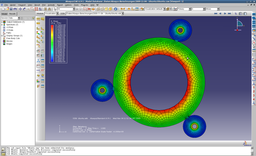
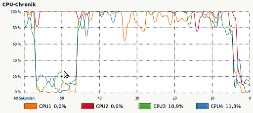

Abaqus
Dieser Artikel wurde für die folgenden Ubuntu-Versionen getestet:
Ubuntu 14.04 Trusty Tahr
Zum Verständnis dieses Artikels sind folgende Seiten hilfreich:
Abaqus  ist eine Finite-Elemente-Software, sie besteht aus folgenden Teilen: CAE für Pre- und Postprocessing, Standard für implizite FE-Berechnungen und Explicit für explizite FE-Berechnungen und CFD für Strömungsberechnung.
ist eine Finite-Elemente-Software, sie besteht aus folgenden Teilen: CAE für Pre- und Postprocessing, Standard für implizite FE-Berechnungen und Explicit für explizite FE-Berechnungen und CFD für Strömungsberechnung.
Der Löser Abaqus/Standard ist ein allgemeiner Gleichungslöser für lineare und nichtlineare statische und dynamische Fragestellungen unterschiedlichster Disziplinen. Er verfügt über eine umfassende Elementbibliothek, eine Vielzahl an Materialmodellen sowie robuste Algorithmen zur Kontaktdefinition. Der Löser eignet sich zur Analyse für Statik , Dynamik, Wärmeübertragung und -strahlung, Elektrostatik und Piezoelektrik, Akustik sowie Bruchmechanik. Außerdem können laminare Strömungen und Steady-state-Transport berechnet werden.
Darüber hinaus bietet Abaqus/Standard auch Prozeduren zur Berücksichtigung der gegenseitigen Wechselwirkung thermisch-mechanischer, mechanisch-akustischer und thermisch-elektrischer Belastungen. Spezielle Funktionalitäten und Elemente qualifizieren Abaqus/Standard auch als ein effizientes Werkzeug für Spezialdisziplinen wie etwa Composites oder Dichtungen. Eine Besonderheit von Abaqus stellen die Verbindungselemente dar. Mit Hilfe dieser Elementfamilie ist die Modellierung von Mehrkörpermechanismen innerhalb einer nichtlinearen FE-Analyse möglich. Dabei können starres, linear elastisches und nichtlineares Materialverhalten innerhalb eines Mechanismus auftreten. Auch für anspruchsvolle lineare Berechnungen bietet Abaqus/Standard spezielle Funktionalitäten wie etwa zur effizienten Abwicklung vieler Lastfälle oder zur Analyse ungelagerter, aber im Gleichgewicht befindlicher Systeme, wie sie in der Luftfahrt häufig vorkommen.
Der Löser Abaqus/Explicit ist für nichtlinearen Probleme geeignet: z. B. Stoßprozesse oder komplexe Kontaktbedingungen. Für diesen Löser stehen nicht alle Elemente zur Verfügung. Oft gibt es nur Elemente mit linearem Ansatz und reduzierter Integration. Denn bei diesen Elementen führt die verwendete explizite Zeitintegration dazu, dass die Massenmatrix eine Diagonalmatrix ist. Diese kann man auf triviale Weise invertieren und es keine Lösung eines Gleichungssystems nötig. Deshalb ist die Berechnungzeit pro Zeitschritt viel geringer als bei Abaqus/Standard. Deshalb können sehr kleine Zeitschrittlängen gewählt werden, so wie es bei nichtlinearen Problemen gewünscht ist.
Der Strömungslöser Abaqus/CFD eignet sich zur Analyse inkompressibler laminarer oder turbulenter Strömungen. Es können zeitabhängige und stationäre Zustände berechnet und auch thermische Strömungsanalysen mit natürlicher oder erzwungener Konvektion durchgeführt werden. In Verbindung mit Abaqus/Standard und Abaqus/Explicit ist die Berechnung von Fluid-Struktur-Interaktionen möglich.
Der Pre- und Postprozessor Abaqus/CAE ermöglicht es, Modelle zu erstellen oder zu importieren, Rechnungen zu starten, ihren Fortgang zu verfolgen, sowie die Ergebnisse darzustellen. Abaqus/CAE besitzt eine Python-Scripting-Schnittstelle: Damit können Modellaufbau und Postprocessing automatisiert werden. Für die Skript-Entwicklung kann das Abaqus Python Development Environment verwendet werden.
Kompatibilität¶
Offiziell unterstützt Abaqus die kommerziellen Linux-Distributionen Red Hat Enterprise Linux (RHEL) und Suse SUSE Linux Enterprise Server. Seit Abaqus 6.6 wird RHEL 5 unterstützt, seit Version 6.11 zusätzlich RHEL 6. Ubuntu wird nicht offiziell von Abaqus unterstützt. Die Abaqus-Versionen 6.7 bis 6.13 funktionieren unter Ubuntu. Allerdings laufen nicht alle Abaqus-Versionen auf allen Ubuntu-Versionen stabil. Insbesondere Abaqus/CAE kann manchmal abstürzen. Deshalb soll hier Wissen über die Kompatibilität gesammelt werden:
| getestete Abaqus-Versionen | ||
| Ubuntu | stabile Abaqus-Versionen | inkompatible Abaqus-Versionen |
| Ubuntu 10.04 | 6.7–6.13 | 6.14 (*) |
| Ubuntu 12.04 (MATE) | 6.7–6.13 | 6.14 (*) |
| Ubuntu 14.04 (LTS) | 6.12 | – |
| Xubuntu 12.04 | 6.11–6.13 | – |
| Xubuntu 14.04 | 6.12–6.13 | – |
| Ubuntu MATE 15.04 | 6.7–6.13 | 6.14 (*) |
| Ubuntu 16.04 (LTS) | 6.12 | – |
Anmerkungen: Abaqus/CAE 6.6 vermisst den GCC 4.2.0. Beim Beenden von Abaqus/CAE 6.9 unter Ubuntu 12.04 tritt ein ungültiger Pointer auf. Mit Abaqus/CAE 6.12 hat sich die Stabilität unter Unity verbessert. In Abaqus/CAE 6.13 ist das Menü Plugins leer. Dies kann durch Setzen der Umgebungsvariable LANG auf 'LANG=en_US.UTF-8' behoben werden (evtl. muss en_US.UTF-8 vorher noch mit 'dpkg-reconfigure locales' aktiviert werden).
* Bei Abaqus-Version 6.14 bricht CAE mit einer 'SMAAbuUtlConvertException' ab, die Solver standard und explicit funktionieren aber. Der Fehler wird ausgelöst, wenn beim Start Dateien mit nicht-ASCII-Zeichen (z.B. Umlauten) im aktuellen Verzeichnis liegen (bspw. der Ordner ~/Öffentlich). Er lässt sich umgehen, indem man Abaqus z.B. aus einem neuen Verzeichnis startet. (getestet unter Gentoo und Debian, nicht Ubuntu)
Hinweis:
Die Pfadnamen und Adressen in dieser Anleitung beziehen sich auf Abaqus 6.9. Für andere Versionen, muss man die Pfadnamen und Adressen entsprechend anpassen. Es wird vorausgesetzt, dass der License-Server nicht auf dem Arbeitsrechner installiert ist. Was aber nicht heißt, dass die Installation auch für den Fall eines lokal installierten License-Servers nicht funktionieren wird. Ergänzungen dies bezüglich sind erwünscht.
Voraussetzungen¶
Java¶
Wie man eine Laufzeitumgebung (JRE) installiert, ist im Artikel Java/Installation beschrieben. Bei Problemen mit dem OpenJDK empfiehlt sich die Verwendung von Oracle Java. Allerdings sind keine Probleme mit dem OpenJDK bekannt.
libstdc++5¶
Zusätzlich wird das Paket
libstdc++5, universe ab Ubuntu 10.10 oder
libstdc++5, backports Ubuntu 10.04
benötigt. Diese Bibliothek wird zusammen mit gcc3.3 installiert. Über packages.ubuntu.com  kann das Paket für Ubuntu 10.04 auch einzeln bezogen werden. Ab Ubuntu Ubuntu 10.10 ist es wieder in den offiziellen Paketquellen enthalten.
kann das Paket für Ubuntu 10.04 auch einzeln bezogen werden. Ab Ubuntu Ubuntu 10.10 ist es wieder in den offiziellen Paketquellen enthalten.
Weitere Pakete¶
Bevor man mit der eigentlichen Installation der Dokumentation und Abaqus anfängt, muss man folgende Programme und Pakete installieren [1]:
libjpeg62
csh (universe)
libxp6 (universe)
gfortran (universe)
gcc (universe)
 mit apturl
mit apturl
Paketliste zum Kopieren:
sudo apt-get install libjpeg62 csh libxp6 gfortran gcc
sudo aptitude install libjpeg62 csh libxp6 gfortran gcc
Installation¶
In diesem Artikel wird davon ausgegangen, dass die Installations-DVDs in folgenden Einhängepunkten eingebunden werden:
"Abaqus Englisch Dokumentation": /media/DOC_SIMULIA_Abaqus_English.media
"Abaqus Software and Licensing": /media/SIM_Abaqus.media
Falls man lediglich ISO-Images der DVDs besitzt, kann beim Einhängen dieser die Einhängepunkte festlegen. Wenn man lediglich die Dateien auf den DVDs besitzt, muss man alle Dateien ausführbar machen [9].
Dokumentation¶
Die Abaqus-Dokumentation sollte vor Abaqus installiert werden.
Bibliothek libtermcap.so.2¶
Bei einem 64-bit-System wird ab Ubuntu 11.10 zuerst folgendes Paket installiert:
libc6:i386
mit apturl
Paketliste zum Kopieren:
sudo apt-get install libc6:i386
sudo aptitude install libc6:i386
Die Dokumentation benötigt die dynamische Bibliothek libtermcap.so.2 in der 32-Bit-Version. Diese Bibliothek ist in aktuellen Ubuntu-Versionen nicht mehr enthalten. Deshalb muss das entsprechende Paket termcap-compat mit seinen Abhängigkeiten manuell heruntergeladen werden: ldso, libc5, termcap-compat und installiert werden [7]:
sudo dpkg -i ldso_1.9.11-15_i386.deb libc5_5.4.46-15_i386.deb termcap-compat_1.2.3_i386.deb
Achtung!
Bei einem 64-Bit-System mit Ubuntu 11.04 oder älter muss diesem Befehl die Option --force-architecture hinzugefügt werden, diese kann das System schwer beschädigen, siehe 64-Bit-Architektur.
Falls man den Dokumentations-Webserver als root installieren würde, könnte man ihn auch nur als root bzw. mit sudo starten. In diesem Artikel soll der Dokumentations-Webserver jedoch für den Benutzer installiert werden, damit er vom Benutzer gestartet werden kann. Dafür erstellt man das Verzeichnis /opt/Abaqus-doc und überträgt es dem Benutzer:
sudo mkdir /opt/Abaqus-doc sudo chown $LOGNAME /opt/Abaqus-doc
Jetzt legt man die DVD "Abaqus Englisch Dokumentation" ein und startet die Installation aus dem Home-Verzeichnis [2]:
TMPDIR=/tmp /media/DOC_SIMULIA_Abaqus_English.media/setup
Falls im Terminal beim Start der Fehler "strings: '/lib/libc.so.6': No such file" angezeigt wird, dann einfach folgendes eingeben:
sudo ln -s /lib/i386-linux-gnu/libc.so.6 /lib/libc.so.6
Während der Installation folgende Angaben machen:
"HTML and PDF" bestätigen
"hostname / IP address" bestätigen
"Abaqus web server" bestätigen
"Abaqus documantion parent directory": /opt/Abaqus-doc
Die Abaqus-Dokumentation wird nun unter /opt/Abaqus-doc installiert. Ob die Installation erfolgreich war, prüft man, indem man http://localhost:2080/v6.9 im Browser aufruft: Dann muss die Dokumentation erscheinen.
Abaqus¶
Um Abaqus zu installieren, legt man die DVD "Abaqus Software and Licensing" ein. Die Installation sollte aus dem Home-Verzeichnis gestartet werden. Dafür gibt es zwei Möglichkeiten:
Die Datei setup mit folgendem Befehl ausführen:
sudo TMPDIR=/tmp /media/SIM_Abaqus.media/setup -nosystemchecks
Falls die erste Variante nicht klappt:
für 32-Bit-System:
sudo /media/SIM_Abaqus.media/lnx86/product/UNIX/Disk1/InstData/NoVM/install.bin
für 64-Bit-System:
sudo /media/SIM_Abaqus.media/lnx86_64/product/UNIX/Disk1/InstData/NoVM/install.bin
Dann die Installationsanweisungen befolgen und folgende Angaben machen:
Lizenz-Server-Adresse: <Port>@<Server-IP>
Hinweis:
Bei Lizenzproblemen während der Installation mit nicht lokalem Lizenzserver kann als Adresse abaqusfea eingetragen werden. Dieses muss im Anschluss an die Installation in der Datei abaqus_v6.env durch die richtige Adresse des Lizenzservers ersetzt werden.
Dokumentations-Webserver-Adresse: http://localhost:2080/v6.9 (falls lokale Installation der Dokumentation)
Installations-Verzeichnis: /opt/Abaqus
MPI-Installationsort (bis Abaqus 6.9): /usr/lib/mpich/bin/mpirun
Falls unter "Product verification results" das Ergebnis "Abaqus/CAE: Failed, Please see verify.html for details." auftritt und unter "/opt/Abaqus/6.13-2/installation_info/verify/CAE.log" der Fehler
/opt/Abaqus/6.13-2/code/bin/ABQcaeK: error while loading shared libraries: libstdc++.so.5: cannot open shared object file: No such file or directory Abaqus Error: Abaqus/CAE Kernel exited with an error.
oder
/opt/Abaqus/6.13-2/code/bin/ABQcaeK: error while loading shared libraries: libstdc++.so.5: wrong ELF class: ELFCLASS32 (oder ELFCLASS64) Abaqus Error: Abaqus/CAE Kernel exited with an error.
zum Ende der Installation auftritt, dann muss die Installation abgebrochen werden (Programm beenden/schließen) und die Folgenden Befehle ausgeführt werden.
alle Architekturen:
sudo rm -r /opt/Abaqus
32-Bit:
sudo apt-get install libstdc++5:i386 sudo ln -s /usr/lib/i386-linux-gnu/libstdc++.so.5 /lib/libstdc++.so.5
64-Bit:
sudo apt-get install libstdc++5 sudo ln -s /usr/lib/x86_64-linux-gnu/libstdc++.so.5 /lib/libstdc++.so.5
Anschließend muss die Installation neu ausgeführt werden.
Verknüpfungen¶
Zuerst legt man eine symbolische Verknüpfungen an, um Abaqus einfacher und schneller von jedem beliebigen Ordner zu starten.
sudo ln -s /opt/Abaqus/Commands/abq691 /usr/local/bin
Nun erstellt man eine Verknüpfung im Hauptmenü [5] im Untermenü "Wissenschaft":
Symbol: /opt/Abaqus/6.9-1/Configuration/icons/ico_SIMULIA_S_Orange_32x32px.png
Name: Abaqus 6.9 CAE
Typ: "Anwendung"
Befehl: /opt/Abaqus/Commands/abq691 cae
Hinweis:
Abaqus CAE läuft mit dem normalen Fenstermanager Metacity stabil. Man sollte bei Metacity jedoch nicht die Effekte aktivieren. Mit diesen Effekten stürzt Abaqus CAE öfter ab.
Mit dem Fenstermanager Compiz kann Abaqus CAE unstabil laufen. Außerdem können Grafikprobleme auftreten (transparente Fenster). Diese lassen sich beheben, indem Abaqus CAE mit XLIB_SKIP_ARGB_VISUALS=1 abaqus cae aufgerufen wird. Treten anschließend zusätzliche leere Fenster auf, handelt es sich um Werkzeugboxen, die unter "View → Toolbars" aktiviert werden können. Um das Problem zu lösen, aktiviert man alle Werkzeugboxen, verteilt sie in der oberen und der rechten Icon-Leiste und speichert die Einstellungen mit "File → Save Options...".
CAE-Dateien mit Abaqus/CAE öffnen¶
Um CAE-Dateien mit Abaqus/CAE zu öffnen, wählt man beim ersten Öffnen einer CAE-Datei Benutzerdefinierte Befehl benutzen und trägt dort folgenden Befehl ein:
abq691 cae database=%f
Bearbeiten von "abaqus_v6.env"¶
Der wichtigste Teil der Installation besteht darin, die Datei abaqus_v6.env (befindet sich im Verzeichnis /opt/Abaqus/6.9-1/site) vorzubereiten. Diese Datei wird in einem Editor [3] mit Root-Rechten [6] bearbeitet, und folgende Änderungen vorgenommen:
Multikern-CPU-Unterstützung¶
bis Abaqus 6.9¶
Hier wird nur folgende Zeile ausgetauscht:
hpmpipath = driverUtils.locateFile(os.environ.get('ABA_PATH', ''), 'External/mpi/hpmpi-2.2.5.1/bin', 'mpirun')und durch folgenden Zeilen ersetzt:
#hpmpipath = driverUtils.locateFile(os.environ.get('ABA_PATH', ''), 'External/mpi/hpmpi-2.2.5.1/bin', 'mpirun')
hpmpipath = driverUtils.locateFile(os.environ.get('ABA_PATH', ''), '/usr/lib/mpich/bin', 'mpirun')ab Abaqus 6.10¶
Ab Abaqus 6.10 funktioniert das MPI von Ubuntu nicht zuverlässig. Deshalb muss man das MPI von Abaqus verwenden und die Zeile nicht austauschen. Um nun zu verhindern, dass man bei jeder parallelen Rechnung sein Passwort eingeben muss, erzeugt man sich einen Public-Key und überträgt diesen auf den eigenen Rechner (siehe SSH):
ssh-keygen -t rsa ssh-copy-id -i ~/.ssh/id_rsa.pub localhost
Unterstützung für Subroutinen¶
Hinweis:
In diesem Artikel wird der Compiler gfortran verwendet, dieser wird von Abaqus nicht offiziell unterstützt. Es ist natürlich nicht garantiert, dass Userroutinen die für Intel-Fortran entwickelt wurden, von gfortran fehlerfrei kompiliert werden können. Wünscht man Unterstützung von SIMULIA und volle Kompatibilität sollte man lieber den Intel-Fortran-Compiler installieren, siehe Howto: Abaqus 6.9.1 auf Linux Mint 7 installieren und Using Intel Compilers for Linux with Ubuntu .
Zuerst legt man fest, dass der Compiler gfortran benutzt werden soll, dafür folgende Zeilen
dirLst = glob.glob('/opt/intel/fce/*')
if dirLst:
dirLst.sort()
fortDefPath = dirLst[-1] + '/bin'
dirLst = glob.glob('/opt/intel/cce/*')
if dirLst:
dirLst.sort()
ccDefPath = dirLst[-1] + '/bin'
fortCompiler = "ifort"
cppCompiler = "icpc"durch diese Zeilen ersetzen:
#dirLst = glob.glob('/opt/intel/fce/*')
#if dirLst:
# dirLst.sort()
# fortDefPath = dirLst[-1] + '/bin'
dirLst = glob.glob('/usr/bin*')
if dirLst:
dirLst.sort()
fortDefPath = dirLst[-1] + '/bin'
#dirLst = glob.glob('/opt/intel/cce/*')
#if dirLst:
# dirLst.sort()
# ccDefPath = dirLst[-1] + '/bin'
dirLst = glob.glob('/usr/bin')
if dirLst:
dirLst.sort()
ccDefPath = dirLst[-1] + '/bin'
#fortCompiler = "ifort"
fortCompiler = "gfortran"
#cppCompiler = "icpc"
cppCompiler = "gcc"Auch die Befehlsparameter für den Compiler-Aufruf müssen geändert werden, dafür
compile_fortran = (fortCmd + " -c -fPIC -auto -extend_source -w90 -w95 -WB -I%I")
durch folgenden Zeilen ersetzen:
#compile_fortran = (fortCmd + " -c -fPIC -auto -extend_source -w90 -w95 -WB -I%I") compile_fortran = (fortCmd + " -c -fPIC -I%I")
Auch diese Zeilen mit müssen geändert werden:
link_sl = (fortCmd +
" -cxxlib-gcc -gcc-version=%i -fPIC -threads -shared " %verId +
"%E -Wl,-soname,%U -o %U %F %A %L %B -parallel -Wl,-Bdynamic " +
"-i-dynamic -lifport -lifcoremt")je nach Abaqus-Version:
bis Abaqus 6.9¶
#link_sl = (fortCmd + # " -cxxlib-gcc -gcc-version=%i -fPIC -threads -shared " %verId + # "%E -Wl,-soname,%U -o %U %F %A %L %B -parallel -Wl,-Bdynamic " + # "-i-dynamic -lifport -lifcoremt") link_sl = (fortCmd + " -gcc-version=%i -fPIC -shared " %verId + "%E -Wl,-soname,%U -o %U %F %A %L %B -Wl,-Bdynamic " + "-i-dynamic -lifport -lifcoremt")
ab Abaqus 6.10¶
Ab Abaqus 6.10 ist der Parameter %verId nicht mehr vorhanden. Entsprechend die Zeilen von link_sl so abändern:
#link_sl = (fortCmd + # " -cxxlib -fPIC -threads -shared " + # "%E -Wl,-soname,%U -o %U %F %A %L %B -parallel -Wl,-Bdynamic " + # "-i-dynamic -lifport -lifcoremt") link_sl = (fortCmd + " -gcc-version=%i -fPIC -shared " + "%E -Wl,-soname,%U -o %U %F %A %L %B -Wl,-Bdynamic " + "-i-dynamic -lifport -lifcoremt")
Jetzt sollte Abaqus mit Multikern- und Subroutinen-Unterstützung laufen.
Unterstützung für Subroutinen mit externen Bibliotheken¶
Es ist möglich in eigenen Subroutinen Methoden aus Bibliotheken zu nutzen, die nicht in Abaqus enthalten sind. Diese können sowohl als Fortran- als auch als C++-Quellcode vorliegen.
Zunächst muss die externe Bibliothek zu einer (oder mehreren) Objektdatei(en) kompiliert werden. Die Endung ist Standarmäßig *.o (MS Windows: *.obj). Dabei sollten zur Wahrungen der Kompatibilität mit Abaqus die Kompiler-Attribute aus abaqus_v6.env (compile_cpp bzw. compile_fortran) sowie der gleiche Kompiler (cppCompiler bzw. fortCompiler) genutzt werden.
Die Objektdatei wird anschließend nach dem Muster *-std.o (MS Windows: *-std.obj) umbenannt und in einen separaten Ordner <lib-path>/ verschoben.
Nun kann die eigene Subroutine mittels
abaqus make library=<filename> directory=<lib-path>/
kompiliert werden. Abaqus erstellt dabei die dynamische Bibliothek libstandardU.so (MS Windows: libstandardU.dll) und linkt alle statischen Bibliotheken mit dem Muster <lib-path>/*-std.o (MS Windows: <lib-path>/*-std.obj) hinzu.
Zur Anwendung der Subroutine mit der externer Bibliothek in einer Simulation wird die Datei libstandardU.so in den Simulationsordner verschoben und die Datei abaqus_v6.env um
import os usub_lib_dir=os.getcwd()
ergänzt. Die Simulation kann regulär mit
abaqus job=<jobname>
gestartet werden. Zu beachten gilt es, dass libstandardU.so Architektur-spezifisch ist und nur eingeschränkt zwischen verschiedenen Maschinen ausgetauscht werden kann.
Bearbeiten von "locale.txt"¶
In Abaqus/CAE werden Unicode-Zeichen – wie Umlaute – in Dateipfaden falsch dargestellt. Zur Lösung des Problems kann in der Datei /opt/Abaqus/6.9-1/Configuration/locale.txt unter [Alias]
de_DE.utf8 = en_US
hingefügt werden.
Funktionstest¶
Wenn bei der Installation alles nach Plan gelaufen ist, sollte jetzt alles richtig funktionieren. Das wird hier getestet.
Läuft die Suche in der Dokumentation? Das ist schnell und leicht zu testen. Einen Webbrowser öffnen und in der Adressleiste folgendes eintippen: http://localhost:2080/v6.9 Wird die Startseite von der Abaqus-Dokumentation geöffnet, ist alles in Ordnung. Bei dieser Gelegenheit kann man gleich ein Lesezeichen setzen. Falls jedoch keine Seite geladen wird, muss man zuerst die oben angelegte Verknüpfung ausführen, um den Dokumentationsserver zu starten. Funktioniert es immer noch nicht, nochmals versuchen, die Dokumentation zu installieren und darauf achten, dass wirklich die Windows-Version verwendet wird.
Läuft die Unterstützung für Mehrkern-CPUs?  Zur Überprüfung startet man einen Job mit dem Befehl.
/opt/Abaqus/Commands/abq691 interactive cpus=4 job=Job_Name
Läuft hier alles ohne Fehler, funktioniert die Multikern-Unterstützung richtig. Falls nicht, nochmal zu Punkt MultiKern-CPU-Unterstützung zurückgehen und überprüfen, ob in der Datei abaqus_v6.env alles korrekt und auch an die richtigen Stellen geschrieben worden ist.
Läuft die Subroutinenunterstützung? Das ist der letzte Funktionstest. Hierfür braucht man die Dateien boltpipeflange_3d_usr_umat.inp und boltpipeflange_3d_usr_umat.f (jedes beliebige andere Paar würde es auch tun). Man kopiert die beiden Dateien in ein gewünschtes Verzeichnis und führt folgenden Befehl aus.
/opt/Abaqus/Commands/abq691 interactive cpus=4 job=boltpipeflange_3d_usr_umat user=boltpipeflange_3d_usr_umat
Auch hier sollte alles ohne Fehlermeldung laufen. Falls nicht, überprüft man alle in Unterstützung für Subroutinen beschriebene Schritte noch ein Mal.
Links¶
Extern¶
CAELinux 2010
, eine auf Ubuntu 10.04 LTS AMD64 basierende FEM-DistributionSALOME
, ein open-source Pre- und Processor

- Erstellt mit Inyoka
-
 2004 – 2017 ubuntuusers.de • Einige Rechte vorbehalten
2004 – 2017 ubuntuusers.de • Einige Rechte vorbehalten
Lizenz • Kontakt • Datenschutz • Impressum • Serverstatus -
Serverhousing gespendet von